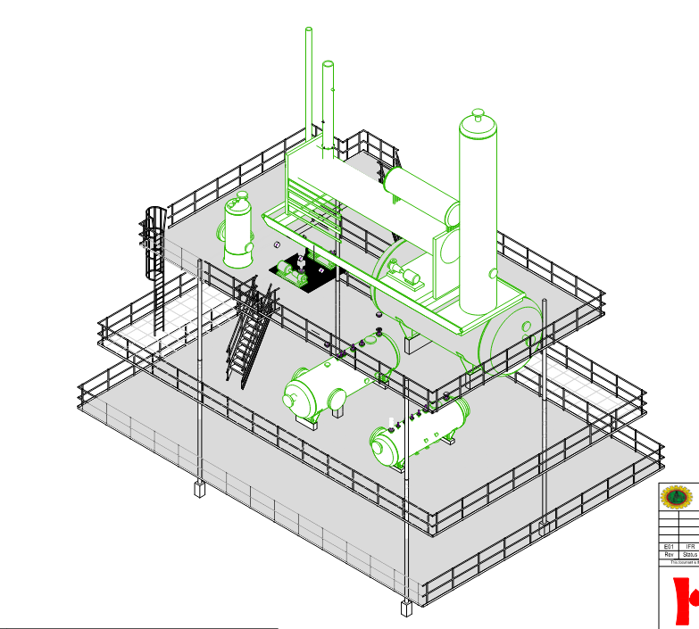
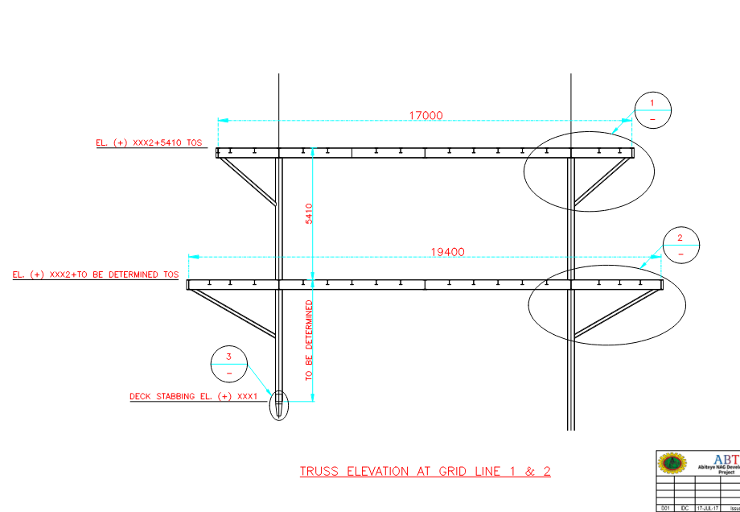
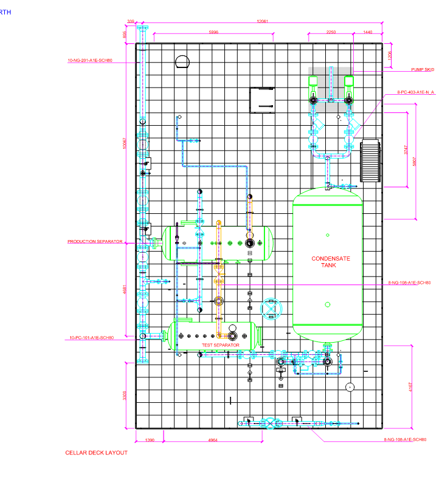
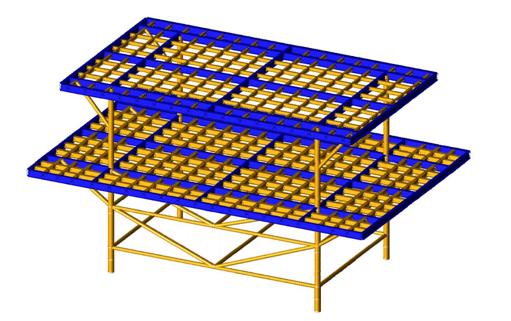

This study was carried out as part of an on-the-job engineering training exercise focused on brownfield conceptual redesign and structural reassessment of the existing Abiteye wellhead platform.
Overview
The Abiteye Wellhead Platform was evaluated and conceptually re-engineered to address aging components and improve maintainability and load capacity. The exercise combined process, mechanical and structural reviews to produce a coordinated conceptual design package suitable for progression to detailed engineering.
Scope of Work
- Review of existing structural documentation and as-built configuration.
- 3D modeling of deck and jacket for visualization and coordination.
- Load estimation (equipment, piping, operational, and environmental loads).
- Structural analysis and member capacity checks (STAAD.Pro).
- Preliminary member sizing, pile load checks and foundation recommendations.
- Preparation of concept drawings: GA, deck plans and jacket elevations.
- Compilation of design-basis notes and a concept design report.
My Role & Contributions
- Performed structural modeling and global analysis using STAAD.Pro.
- Developed preliminary member sizing and pile-load checks for the jacket and deck framing.
- Assisted drafting/modeling team with Revit and AutoCAD views and GA layouts.
- Prepared calculation notes, material-take-offs and summary tables using Excel.
- Contributed to the Structural Basis of Design and the Concept Design Report (MS Word).
- Worked in a supervised training environment, collaborating across process, mechanical and structural disciplines.
Outcome
The study produced a full conceptual package—3D models, analysis outputs, concept drawings and a design report—identifying overstressed members, suggested strengthening measures, and clear next-step recommendations for detailed design. The exercise also delivered measurable upskilling: practical STAAD modeling, Revit coordination, and multidisciplinary handoffs.
Gallery




